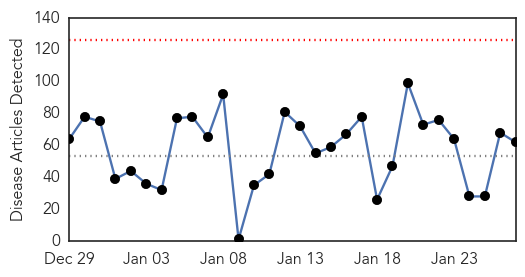

Unknown
30-Day Web Trend
0 alerts, 0 warnings

30-Day Twitter Trend
3 alerts, 0 warnings

Article Locations

Article Confidences
Top Articles:
- 0.988
- Flu kills 8 Hong Kong patients in one day, as infection rate hits 5-year high
- 0.958
- Plague cases rise in Madagascar, fear of more epidemics: WHO
- 0.957
- Plague cases rise in Madagascar, fear of more epidemics - WHO
- 0.946
- North America Confirms First Case of Bird Flu in Woman After China Trip
- 0.945
- Disease that killed Lockhart lurks, remains unpreventable
- 0.925
- No more cases of Norovirus at Eliot
- 0.922
- Agency officials respond to STD outbreak
- 0.922
- Streptococcus: What it is and why chickenpox raises risk
- 0.920
- Canada resident tests positive for H7N9 avian flu virus
- 0.917
- Chicago Tribune
- 0.917
- Chicago Tribune
- 0.917
- Chicago Tribune
- 0.917
- Chicago Tribune
- 0.917
- Chicago Tribune
- 0.917
- Chicago Tribune
- 0.917
- Chicago Tribune
- 0.917
- Chicago Tribune
- 0.917
- Chicago Tribune
- 0.917
- Chicago Tribune
- 0.917
- Chicago Tribune
- 0.917
- Chicago Tribune
- 0.917
- Chicago Tribune
- 0.917
- Chicago Tribune
- 0.917
- Chicago Tribune
- 0.917
- Chicago Tribune
- 0.917
- Chicago Tribune
- 0.917
- Chicago Tribune
- 0.917
- Chicago Tribune
- 0.914
- KFD vaccination guidelines relaxed to tackle its spread more effectively
- 0.913
- Rabies Vaccine Fails in Rare Death
- 0.910
- The world windows to Thailand
- 0.897
- Chinese Military Hospital in Lockdown Over Suspected SARS Cases
- 0.866
- Yemen's Houthi fighters free presidential chief of staff -official
- 0.865
- Listeria ride on American apples Stop eating apples; it’s not worth the risk
- 0.862
- NewsDaily
- 0.862
- NewsDaily
- 0.862
- NewsDaily
- 0.854
- Aust woman acquitted of child abduction
- 0.849
- Ghana moves to ban Nigerian poultry over bird flu scare
- 0.825
- Visiting restrictions in place at mayo general hospital
- 0.796
- Cambridge Memorial Hospital declares enteric outbreak
- 0.726
- Dog disease in lions spread by multiple species
- 0.722
- UN agencies ramp up aid efforts to flood-hit Southern Africa countries
- 0.710
- Cumberland Infirmary cancels operations over norovirus outbreak
- 0.702
- Hospitals to have rankings>
- 0.693
- IS group video gives Japanese hostage 24 hours to live
- 0.693
- IS group 'dreams of fighting the West on the ground’
- 0.689
- Video: Russia bans Ukraine salt as 'unsanitary'
- 0.685
- French town of Lunel under spotlight after terrorism raid
- 0.681
- Plant High School: Possible TB exposure reported, 150 students may need testing
Showing top 50 articles...
Top Tweets:
- 0.817
- .@SureAmGrumpy If the flu viruses circulating are very different from the vaccine viruses, the flu vaccines won’t work as well. FIGHTFLU
- 0.694
- Vaccination prevented about 7.2 million flu illnesses last flu season. FightFlu GetAFluVax http://t.co/7opDbsmRgl
- 0.683
- .@Techtembo888 Flu is generally worse than a cold; symptoms like fever, body aches, extreme tiredness are more common w/ flu. FightFlu
- 0.666
- .@SureAmGrumpy Each year, experts select the strains to include in the flu vaccine months before the start of flu season. FIGHTFLU
- 0.591
- RT: Transmission of Corona-MERS virus from camels to humans is rare... - Study https://t.co/xOMuJB41af h/t Shiloh coronav…
- 0.560
- .@Techtembo888 No, the flu vaccine will not interfere with cholesterol meds. FightFlu
- 0.537
- RT: En pocos minutos anunciamos proyecto de colaboración UPR / AAA de gran beneficio para nuestros estudiantes. ¡Pendientes! @A…
- 0.533
- Remember:Flu is serious. If sick w/ flu, early treatment w/ antivirals could be the difference b/w life & death for high risk ppl FightFlu
- 0.532
- .@SureAmGrumpy About 64% of H3N2 viruses are antigenically drifted from the H3N2 virus component used in the 14-15 flu vaccine. FightFlu
- 0.518
- RT: Canada resident tests positive for H7N9 avian flu virus http://t.co/XDp5EPWQ1T
Measles
30-Day Web Trend
19 alerts, 3 warnings

30-Day Twitter Trend
2 alerts, 0 warnings

Article Locations
Article Confidences

Top Articles:
- 1.000
- What Infectious Diseases Kentuckians Do (and Don't) Have to Really Worry About
- 0.994
- Measles outbreak causes concerns over vaccination rates
- 0.989
- California Measles Outbreak Grows to 73 Cases
- 0.988
- News, Sports, Jobs, Michigan, Community Information - The Alpena News
- 0.979
- Map: Measles FAQ: Where to get vaccinated, who should do it and more
- 0.976
- Discussion of Vaccinating Following Measles Outbreak - KULR8.com
- 0.973
- Six more measles cases reported in California after Disneyland outbreak
- 0.971
- California Measles Outbreak Grows to at Least 73 Cases: Health Officials
- 0.968
- What you need to know
- 0.963
- Origins of Disney-linked measles may never be known
- 0.958
- Me, Mickey, and Measles
- 0.958
- Guest columns: Vaccines are necessary
- 0.952
- Confirmed Case of Measles Reported; Exposure to Virus...
- 0.943
- Illinois Reports Confirmed Case Of Measles
- 0.935
- Measles Outbreak Spreads: 87 Cases, 7 States, Plus Mexico
- 0.932
- SCHNEIDEREIT: Past scourge of measles ancient history to many
- 0.928
- Illinois Confirms Its First Case Of Measles In 2015
- 0.927
- Multistate Measles Outbreak Drives Up State Health Agency Costs and Points to Importance of Quality Immunization Communication
- 0.915
- Measles sufferer visited businesses in Gilroy, Milpitas
- 0.903
- 30 babies placed under home isolation as California grapples with measles outbreak
- 0.899
- Measles Outbreak in Beijing's High-rise Building Under Control
- 0.891
- Dozens quarantined as health agencies try to stem measles outbreak
- 0.890
- Disney Land Employees Fully Covered by MMR Vaccine Still Received Measles
- 0.886
- Measles confirmed in Cook County's northwest suburbs
- 0.885
- Health Officials Urge Taking Precautions Against Measles
- 0.872
- Doctors Focus on ‘Vaccine-Hesitant’ to Fight Outbreaks
- 0.869
- Anti-Vaxers Feel the Heat As Measles Outbreak Spreads
- 0.869
- Health professionals confirm 59 measles cases in California
- 0.866
- Illinois reports year's first measles case
- 0.835
- Measles spreads in California, comes to Illinois
- 0.823
- National vaccination rates haven't dropped, despite anti-vax hype
- 0.820
- Odds catch up with unvaccinated Disneyland visitors
- 0.787
- Measles case in Omaha, another in Lincoln raises concerns
- 0.745
- Latest Report Indicates 64 Measles Cases Linked to Disneyland
- 0.739
- California Straight Chiropractor Fights Disney Measles Mania
- 0.731
- Sioux Falls elementary school student diagnosed with measles
- 0.727
- Measles Outbreak Was Inevitable but Can Be Halted, UAB Doctor Says
- 0.727
- Some Parents Choose To Put Kids in Harm's Way
- 0.720
- Why This Year's Measles Outbreak is Concerning and May Break Records
- 0.704
- IWF -Some Parents Choose To Put Kids in Harm's Way
- 0.679
- Anti-vaccine parents boost measles comeback: Our view
- 0.662
- Measles outbreak that began at Disneyland grows to 87 cases
- 0.659
- Adults May Feel Impact Of Measles Outbreak
- 0.657
- Doctor explains why he lets kids avoid the measles vaccine
- 0.647
- For measles protection, encourage all to get vaccinated
- 0.630
- Two contract measles from Arizona family who went to Disneyland
- 0.576
- Gavi's Goal: Vaccinate Millions More Children
- 0.532
- Measles in Alaska? State health department waits for results
Top Tweets:
- 0.917
- how about measles & mumps? infectious disease